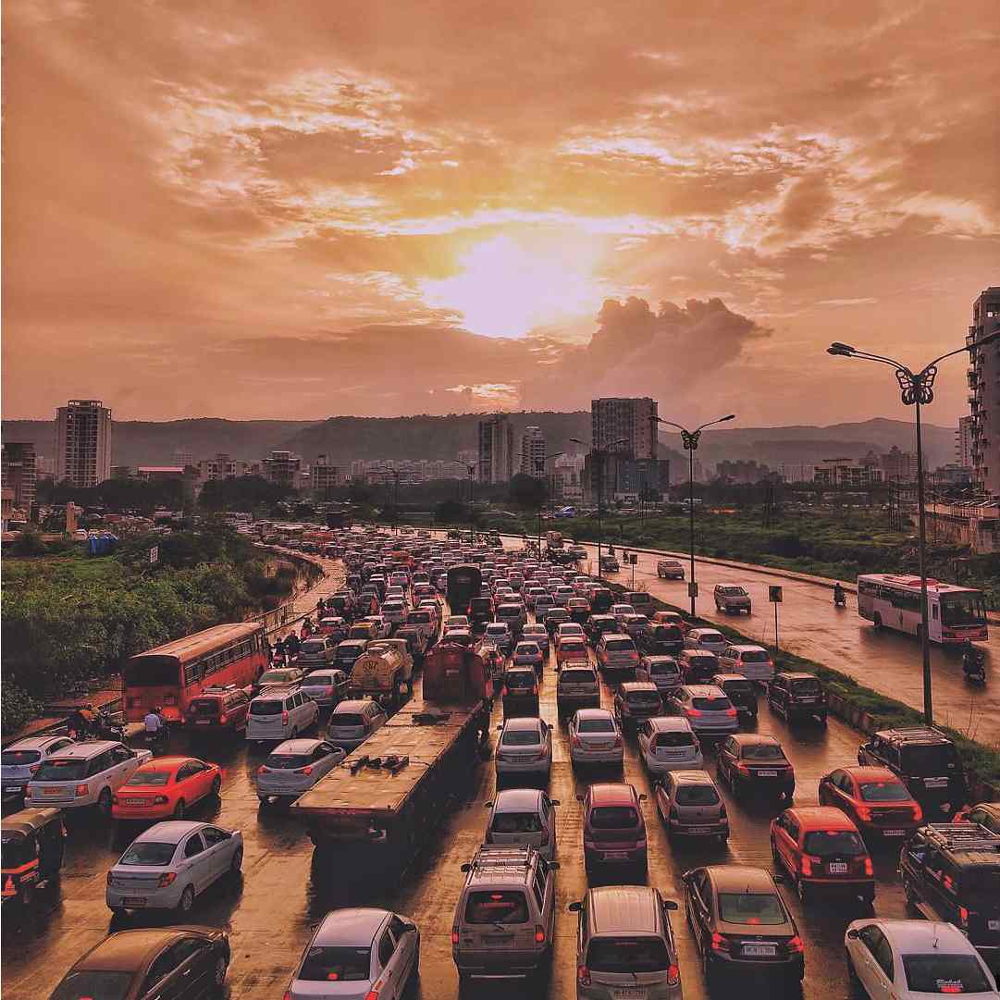

PHOTOS
Here are some of the latest photos of Mumbai
Mumbai Locals are the Lifeline of Mumbai. It carries more than 7.5 million commuters daily
The Dadar railway station (western & central) as well as the tracks between Dadar and Elphinstone Road-Parel stations are visible
The Bandra Worli Sealink which connects Bandra & Worli makes it easy & saves time while travelling from South to Suburbs of Mumbai
Usual Traffic on roads of Mumbai

Both, sea facing skyscrapers and small huts/slums may be divided on the basis of lifestyle and standard of living but there's one thing in common between them, and it is "The spirit of Mumbai "
The beautiful Night Skyline of Mumbai shining in its glory
The Indian National Flag being waved on the occasion of Republic Day of India
The ITC Grand Central Hotel located in central Mumbai reflects the rich heritage of the colonial past and modern times.
A piece of art "I Love Mumbai" placed at Bandstand, Bandra
The newly constructed T2 of Chhatrapati Shivaji Maharaj International Airport Mumbai
The Ariel view of Mumbai captured while flying over Mumbai
The Lifeline of Mumbai waiting for passengers to board the train at Andheri station
Dadar TT Flyover captured during night & areas of Dadar & Wadala are visible
The architectural beauty of Dr. Bhau Daji Lad Museum which has many historic arts of Mumbai
Mumbai Metro travelling towards its destiny
▲